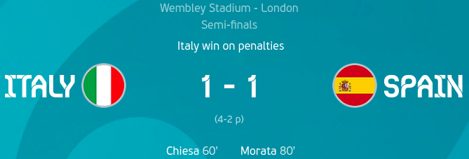

Day 27
Italy v Spain

Penalty shootout
Locatelli (0-0)
Olmo (0-0)
Belotti (1-0)
Moreno (1-1)
Bonucci (2-1)
Thiago (2-2)
Bernardeschi (3-2)
Morata (3-2)
Jorginho (4-2)
In a repeat of the Euro 2012 final, Italy and Spain faced off. Spain were the ones who started off strong but the lack of a finisher was missing as the stand in Oyarzabal among others missed some great chances to score(Something Italy need to work on for the final). The breakthrough arrived in the second half with a curler from Chiesa. For Spain, the chances were there but a finisher needed to be there and Morata finally delivered and equalised after a great move from Spain. However, in the penalty shootout, he went straight back to 0 as he missed a crucial penalty to keep them in and Jorginho managed to wrong foot Simon to win the shootout.